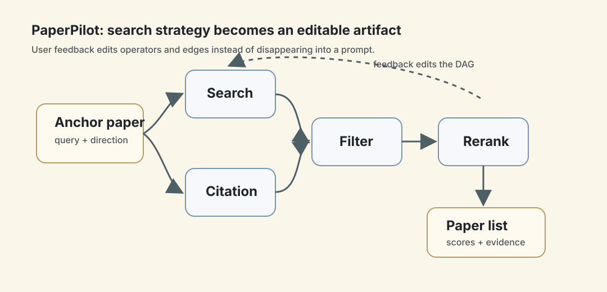
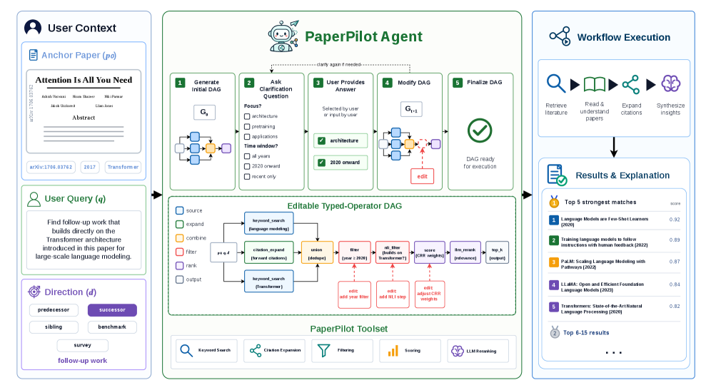
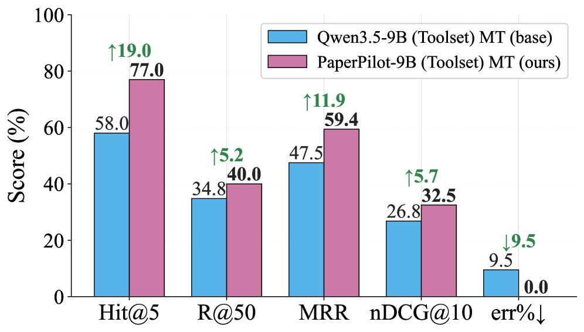
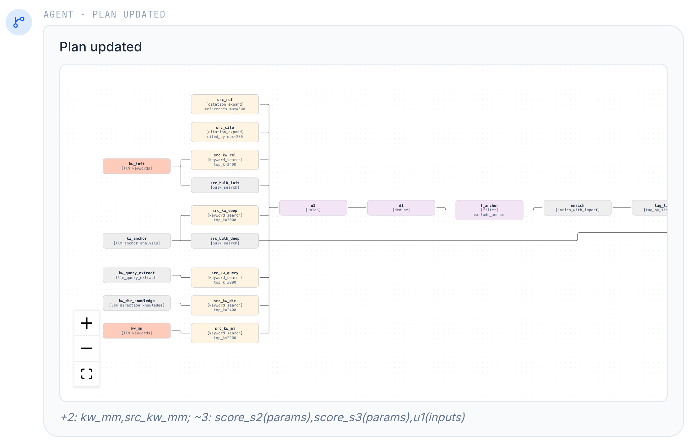
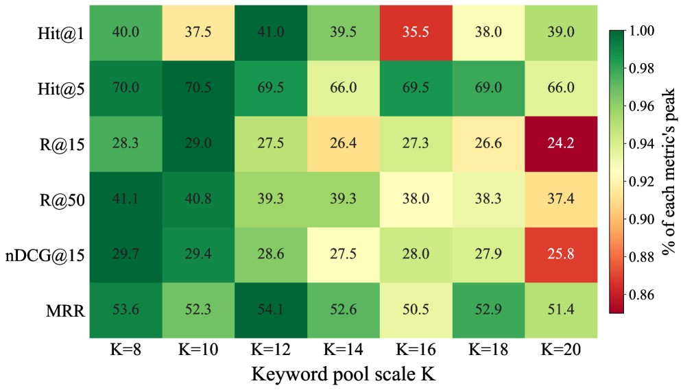
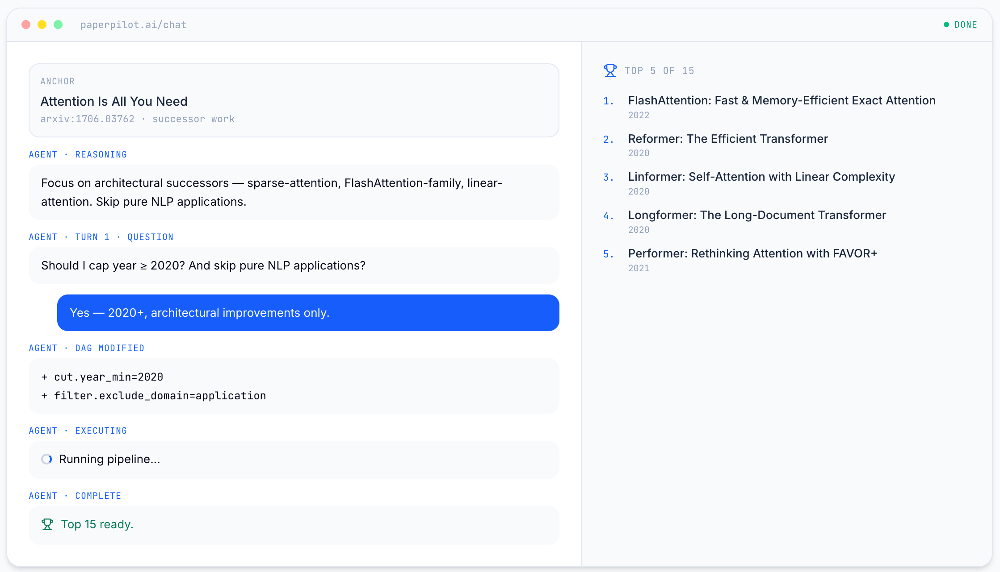

PaperPilot：把文献搜索从一次 query 变成可编辑 workflow
- Paper: Multi-Turn Agentic Scientific Literature Search via Workflow Induction
- Version: arXiv v2, 2026-07-03
- Authors: Jisen Li, Bingxuan Li, Nanyi Jiang, Xuying Ning, Xiyao Wang, Yifan Shen, Heng Wang, Yuqing Jian, Xiaoxia Wu, Ben Athiwaratkun, Pan Lu, Jiaxuan You, Bingxin Zhao
- Project: paperpilot.papersearch.org
- Code: mtilyxuegao/PaperPilot
- 类型: literature search agent / workflow induction / multi-turn retrieval / system + benchmark paper
- 关键词: PaperPilot, workflow induction, DAG workflow, literature search, citation expansion, evidence grounding, multi-turn feedback
读法：给人和 agent 的路标
这篇和我们自己的 paper-reading/wiki pipeline 很贴：它不是在做“给一个 query 返回一堆 paper”的搜索引擎，而是在研究 如何把用户含混、会变化的科研意图，翻译成一个可执行、可检查、可修改的搜索 workflow。
如果只想快速 get 到主线，先读 一句话判断、Figure 2 的 workflow 图、训练数据怎么构造 和 Table 2 / Figure 5 的核心结果。如果要借鉴到自己的系统，再读 toolset、workflow editing、user simulator 和 limitations。
给 agent 以后检索时，关键词是：PaperPilot、workflow induction、typed operator DAG、citation expansion、NLI filter、workflow imitation、preference over corruptions、Qwen3.5-9B、multi-turn literature search。
一句话判断
PaperPilot 的核心贡献是把科学文献搜索从“语言模型自己想一个搜索策略”改成“模型生成并编辑一个显式 DAG workflow”。这让文献搜索过程更可控、可检查、可针对用户反馈修改，也更像一个真正可维护的 research agent harness。
我的判断是，这篇最有价值的地方不是 9B 模型打过某个大模型，而是它提出了一个很适合个人知识库的接口：搜索策略本身应该成为 artifact。用户不只是说“这些结果不对”，而是反馈会落到 workflow 里的 keyword、citation direction、filter、NLI axis、reranking criterion 这些可编辑对象上。
图表优先读法
| 先看 | 图/表 | 读完应该抓住什么 |
|---|---|---|
| 1 | Figure 2：workflow overview | PaperPilot 生成的是 typed DAG，不是隐式搜索 prompt |
| 2 | Workflow refinement DAG | 用户反馈应该落成 node/edge/parameter edit |
| 3 | Figure 5：main gains | 训练 workflow model 能把 execution error 从 9.5% 压到 0% |
| 4 | Search session demo | 一个完整文献搜索 session 应该保存策略、结果和证据 |
| 5 | Figure 8：search scale | 候选池不是越大越好，噪声会伤害 rerank/filter |

这张自制图把 PaperPilot 的 taste 画得更直白：搜索策略不是一段隐藏 prompt，而是一个可编辑、可复现、可审计的 typed DAG。用户反馈应该落到 operator、edge 和参数上，而不是变成下一轮自然语言补丁。这也是它对个人知识库最有迁移价值的地方。
先看核心流程图

Figure 2 是全文最重要的图。它展示了一个完整 PaperPilot 流程：给定 anchor paper 和用户搜索意图，agent 先生成初始 DAG，问 clarification question，再根据用户回答修改 DAG，最终执行 workflow 并输出带分数和解释的 paper list。
这张图里有三个锚点：
- 输入不是裸 query：输入包含 anchor paper、user query 和 search direction，例如 predecessor、successor、sibling、benchmark、survey。
- workflow 是 typed operator DAG：节点不是自然语言步骤，而是关键词搜索、引用扩展、union、filter、NLI filter、score、rerank、top-k、evidence extraction 等 operator。
- 反馈修改的是 workflow：用户说“更关注 architecture，不要 applications”或“只看 2020 后”，系统不是把这句话拼进 query，而是修改 filter、NLI axis、ranking weights。
1. 这篇到底想解决什么问题？
论文的出发点很对：科研文献搜索通常不是一次 query 能完成的。比如“找这篇 paper 的 follow-up work”可能有很多含义：
- 是找 直接引用它 的 paper？
- 是找 同一方法路线的延伸？
- 是找 同一 benchmark 上的强 baseline？
- 是找 应用到相邻领域 的 work？
- 是找 最近两年真正 building upon 它的 paper？
传统 search agent 常有两类问题。第一类是 fixed pipeline，不管用户想找 predecessor、successor 还是 benchmark paper，都走同一套 retrieve-rerank-summarize。第二类是 implicit reasoning，LLM 在自由文本里“想”搜索策略，但用户很难知道它到底改了什么，也很难稳定复现。
PaperPilot 的答案是：把 literature search 表示成 workflow induction。搜索策略不是隐藏在 CoT 里，而是显式生成一个 DAG，用户反馈可以转成 DAG edit。
2. 方法机制：DAG workflow 是核心对象
论文把一个 workflow 表示为：
\[G = \left(V, E\right)\]其中每个节点是一个实例化的 paper-search operator：
\[v_i = \left(o_i, \theta_i\right), \quad o_i \in \text{PaperPilot-Toolset}\]- $o_i$ 是 operator，例如
keyword_search、citation_expand、filter、score、llm_rerank。 - $\theta_i$ 是参数，例如 query、top-k、citation direction、filter predicate、scoring formula。
- 边 $\left(v_i, v_j\right)$ 表示 $v_i$ 的输出会作为 $v_j$ 的输入。
每一轮 rollout 可以理解成：
\[G_t = \text{Induce}\left(q, p_0, P_t, H_t\right)\] \[\left(P_{t+1}, y_t\right) = \text{Execute}\left(G_t, P_t\right)\]其中 $q$ 是用户 query，$p_0$ 是 anchor paper，$P_t$ 是当前候选 paper set，$H_t$ 是历史交互。执行后，系统可以返回 ranked papers、evidence，或者继续问澄清问题。
多轮反馈不是重复搜索，而是 workflow editing：
\[G_{t+1} = \text{Refine}\left(G_t, f_t, H_{t+1}\right)\]也就是说，用户反馈 $f_t$ 应该改变 workflow 结构、operator 参数和中间候选集，而不是只变成下一轮 prompt 的一段文本。
PaperPilot Toolset
Appendix A.1 给了 17 个 operator，我会按功能压缩成这张表：
| 类别 | Operator | 它解决什么 |
|---|---|---|
| Sourcing | keyword_search, citation_expand, web_resolve |
从关键词、引用图或 URL 获取候选 paper |
| Combine / Filter | union, dedupe, filter |
合并、去重、按年份/领域/约束过滤 |
| Scoring / Cutting | score, top_k, above |
给候选打分并截断 |
| Rerank / Read | llm_rerank, nli_filter, fine_read |
用 LLM 做细粒度重排、NLI 分类和精读 |
| LLM keywords | llm_keywords, llm_keywords_from |
生成搜索关键词或从候选 paper 里提取关键词 |
| Output | extract_evidence, pairwise_nli, build_graph |
输出证据、paper 关系和图结构 |
这个 toolset 的意义是把“文献搜索”拆成可组合的小算子。我的分析是，这比直接让 LLM 写搜索 prompt 更接近 harness engineering：模型负责选择和编辑 workflow，执行和状态可以交给外部系统。
3. 训练：让模型学会生成 workflow，也学会避开坏 workflow
PaperPilot-9B 的训练分两阶段。
第一阶段是 workflow imitation。作者从 2,723 个 anchor-query training cases 出发，覆盖五类 search direction：predecessor、successor、sibling、benchmark、survey。强 teacher model 生成完整 search trajectories，作者保留那些 gold paper 出现在 top-5 且满足方向性 success condition 的 turn，得到 5,540 条 workflow supervision examples。
第二阶段是 preference optimization over corrupted workflows。作者把成功 workflow 当 chosen response，再人工设计 corruption 生成 rejected response。corruption 包括：
- invalid references；
- missing inputs；
- incorrect operators；
- dropped critical nodes；
- shifted filters；
- vague NLI axes。
过滤 easy pairs 后，保留 1,733 个 hard chosen-rejected workflow pairs，用 IPO-style DPO 训练。训练细节在 Appendix C.6：
- SFT: 3 epochs，learning rate $2 \times 10^{-4}$，sequence length 14,336；
- LoRA: attention 和 MLP projections；
- Preference stage: 3 epochs，learning rate $3 \times 10^{-5}$，sequence length 16,384；
- IPO-style DPO objective，$\beta = 0.2$，gradient clipping max norm 1.0。
这个训练设计的重点不是让模型“知道更多 paper”，而是让模型更会生成和修改可执行 workflow。
4. 实验设置：这个 benchmark 在测什么？
论文的 hold-out benchmark 是多轮科学文献搜索任务。每个 case 包含：
- anchor paper；
- user query；
- search direction；
- hidden gold-paper set；
- interaction protocol。
benchmark 覆盖五类 search direction：predecessor、successor、sibling、benchmark、survey。每个 case 有 6 到 15 篇 hidden gold papers，gold set 来自 citation graph signals、human filtering、LLM-assisted synthesis 和 related-work cohorts。
多轮评测里，用户反馈来自固定的 Qwen3.5-397B-A17B user simulator。这个 simulator 能看到 hidden gold metadata，但 retrieval agent 看不到。作者还做了 leakage control：prompt 约束、deterministic string matching、以及 Qwen3.5-9B leak checker，避免 simulator 直接泄漏 gold paper 标题或作者。
我的判断是，这个设置很聪明，但也要谨慎：它提高了可复现性，也引入了 user simulator bias。真实人类用户的偏好可能更模糊、更反复、更不按选项走。
5. 关键结果：workflow induction 是否真的有用？

Figure 5 展示 PaperPilot-9B 相比 base Qwen3.5-9B toolset agent 的主结果。多轮设置下：
| 系统 | Hit@5 | Recall@50 | MRR | nDCG@10 | Workflow error |
|---|---|---|---|---|---|
| Qwen3.5-9B + Toolset, multi-turn | 58.0 | 34.8 | 47.5 | 26.8 | 9.5% |
| PaperPilot-9B, multi-turn | 77.0 | 40.0 | 59.4 | 32.5 | 0% |
这张图回答的是：训练一个 workflow-induction model 是否比直接给 base model 工具更稳定？答案是明显 yes。base 9B 在多轮交互里会因为 workflow editing 变复杂而出错，PaperPilot 通过 workflow imitation + preference training 把 execution error 从 9.5% 压到 0%。
Table 2 里还可以看到更完整的定位：
| 系统 | 设置 | Hit@5 | MRR | nDCG@10 | Cost / case |
|---|---|---|---|---|---|
| GPT-5.4 + Web Search + Toolset | multi-turn | 84.0 | 71.8 | 41.6 | USD 0.1508 |
| OpenAI o4-mini DeepResearch | one-shot | 72.0 | 53.0 | 29.2 | USD 6.0903 |
| Qwen3.5-9B + Toolset | multi-turn | 58.0 | 47.5 | 26.8 | USD 0.0134 |
| PaperPilot-9B | multi-turn | 77.0 | 59.4 | 32.5 | USD 0.0180 |
PaperPilot-9B 没有超过最强的 GPT-5.4 + Web Search + Toolset，但它明显超过同尺寸 base agent，也比 DeepResearch 便宜很多。论文说它比 DeepResearch 便宜两个数量级，从 USD 6.0903 到 USD 0.0180 per case，量级上确实成立。
6. Workflow-level ablation：它是真的会写 DAG，还是只是检索更好了？
论文不只看最终 paper list，还评估 workflow generation 和 workflow editing。

Workflow generation 里，PaperPilot-9B 的 whole-workflow TF-IDF cosine 从 base Qwen3.5-9B 的 0.0470 提升到 0.3619；function signature similarity 从 0.0281 到 0.2238。GPT-5.4 绝对 similarity 更高，whole-workflow cosine 是 0.7010，但 cost/case 是 USD 0.12565，而 PaperPilot-9B 是 USD 0.00108。
Workflow editing 里，PaperPilot-9B 的 final workflow cosine 是 0.9469，query-level cosine 是 0.8777，在 add-node、modify-node、remove-node refinement 上整体最稳。
我的分析是，这个 ablation 很关键。它说明 PaperPilot 的收益不只是“拿了一个更好的 reranker”，而是模型确实学会了一部分 workflow construction/editing 行为。
7. 搜索规模和人类研究：两个有意思的细节

Figure 8 很值得放进笔记，因为它反直觉：候选池不是越大越好。作者把 first-stage candidate pool 从 $K=8$ 扩到 $K=20$，发现很多指标在 $K=8$ 到 $K=10$ 附近最好，继续扩大反而引入 distractors。比如 Recall@50 从 $K=8$ 的 0.411 降到 $K=20$ 的 0.374，Hit@5 从 $K=10$ 的 0.705 降到 $K=20$ 的 0.660。

这张 demo 图对我们自己的知识库很有启发：最后保存的不应该只是 paper list，还应该保存 workflow、用户反馈、每篇 paper 为什么入选、下一步该怎么缩小范围。也就是说，paper-reading 的“搜索过程”本身应该变成可复用资产。
这个结论对自己的 paper search 很实用：不要以为“多抓一些候选 paper 总是更好”。如果后面的 filter/reranker 没有足够强，扩大候选池会让噪声淹没真正相关的 paper。
Human study 里，作者让参与者和系统交互，每个参与者 5 个 sessions，比较 GPT-5.4、OpenAI DeepResearch 和 PaperPilot。Table 4 的结果：
| 系统 | Success Rate | Top-1 Distance | Question Satisfaction | Turns Until Satisfaction |
|---|---|---|---|---|
| GPT-5.4 | 32.0% | 7.8 | 2.4 | 4.0 |
| OpenAI DeepResearch | 8.0% | 27.4 | - | 1.0 |
| PaperPilot | 74.7% | 2.4 | 4.2 | 3.8 |
这个 human study 支持“多轮 clarification + workflow editing 对真实用户更友好”的方向，但样本规模和参与者范围还需要更大实验确认。
8. 我怎么看这篇
可信之处
- 机制和问题很匹配。 文献搜索确实是 preference-dependent、multi-turn、需要可解释策略的任务，用 workflow DAG 表示很自然。
- 不只报最终检索分数。 论文还评估 workflow generation、editing consistency、cost-effectiveness、human study 和 search scale sensitivity。
- 错误率下降很有说服力。 Base 9B toolset agent 在 multi-turn 下 execution error 到 9.5%，PaperPilot-9B 降到 0%，说明专门训练 workflow editing 是必要的。
- 成本意识比较好。 它没有只追最高分，而是把 per-case cost 和 successful cases per dollar 放进主表。
需要警惕的地方
- user simulator 是核心假设。 它让实验可复现，但真实用户的反馈更混乱，也未必按选项回答。
- gold set 构造仍有人工和 LLM 辅助。 benchmark 质量依赖 citation graph、human filtering、LLM-assisted synthesis 和 related-work cohorts，外部复现成本不低。
- 领域主要是 CS 文献。 论文自己也承认，跨医学、材料、法律、社会科学等领域时，operator library 和 relevance criteria 可能要重做。
- workflow library 是预定义的。 如果用户要做更复杂的 meta-analysis、实验复现、dataset audit，目前的 17 个 operator 可能不够。
- 强 baseline 仍然更强。 GPT-5.4 + Web Search + Toolset 在 Hit@5 和 MRR 上最好，只是成本更高。PaperPilot 的定位是高性价比和可控 workflow，不是所有指标第一。
9. 对我的价值
这篇可以直接放进个人 wiki/paper-reading pipeline 的设计原则里。
我会借三点：
- 把搜索策略落成 artifact。 以后找 related work，不应该只有“搜索关键词”和最终列表，还应该保存 search direction、citation expansion、filter、reranking criterion 和排除理由。
- 把用户反馈转成 workflow edit。 比如我说“这几篇太 broad，想要 agent harness 相关的”，系统应该改 NLI/filter/rerank 标准，而不是只把这句话附到 query 后面。
- 不要无限扩大候选池。 先做小而准的 candidate pool，再用 evidence extraction 和 reranker，可能比一口气抓 100 篇更好。
如果要把它做进我的知识库，最小版本可以是：
anchor paper + query
-> choose direction: predecessor / successor / sibling / benchmark / survey
-> keyword search + citation expansion
-> filter by year / method / benchmark / domain
-> score and rerank
-> extract evidence snippets
-> user feedback edits workflow
-> save workflow + results into paper-reading
我的判断是，这和 Harness Engineering 那篇形成了很好的闭环：PaperPilot 其实就是一个面向文献搜索的 harness，把“如何搜索”从隐式推理变成显式、可编辑、可审计的 workflow。
一句话收束
PaperPilot 最值得记住的是：文献搜索不是一次性 query，而是一个可以被构造、执行、反馈和编辑的 workflow。对个人知识库来说，它提示我们不要只保存最终推荐 paper，更要保存搜索路径、过滤标准、证据和用户反馈如何改变了搜索策略。